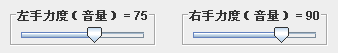
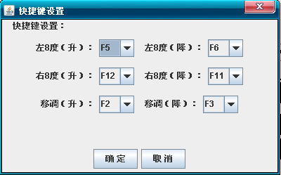
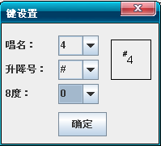
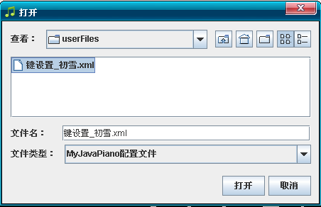
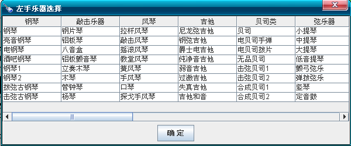
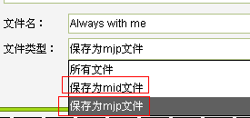

MyJavaPiano采用Java语言编写，运行之前需安装JRE（Java Runtime Environment，java运行环境）。
Java是一种跨平台的语言，因此本软件可在Windows, Linux等不同操作系统下运行。
项目地址：http://code.google.com/p/myjavapiano/downloads/list 我会将版本更新第一时间发送到该地址。
本软件永久免费，开放！！
快捷键：左（F5升，F6降），右（F12升，F11降）


右键单击想要改音的键。在弹出框中选择音符即可。

自定义文件保存了曲子的大调、左右8度、左右力度、延音等各类信息。
自定义键文件格式为xml，默认位置为MyJavaPinao目录下的”按键设置“目录。

延音不是延时，是指按键弹起后，声音并不马上结束，产生“拖音”的效果。
注：对于本来就有延音效果的音色（如弦乐器），可将延音设置为0，以免出现嗡嗡混响。
MyJavaPiano在不外接音源的情况下，有两套midi音色可以使用，分别为windows默认音色和Java自带音色，它们都带有128中乐器音色。为了达到更佳的音色，可以外接软音源来实现。
MyJavaPiano支持双音源，可以分别设置左右midi设备，以达到更好的演奏效果。
设置外接音源步骤：
1安装软音源（Pianissimo、TruePianos、SoundStage等）
2安装YAMAHA virtual midi driver
3设置软音源端口（如果有两种软音源，最好端口分别选择为1，2， 分别与下拉列表中的1,2对应。）
可选择windows默认midi设备和Java自带midi的128种音色，
点击乐器，可预览该乐器对应的音色。
注：若使用外挂音源，选择音色并不会起作用。

录音可保存为mjp和midi文件。

非常欢迎大家的使用和关注，你们的意见是我不断改进的动力。。
作者：小肖
QQ：540311360
QQ交流群：147057921
电子邮箱：xwh817@163.com